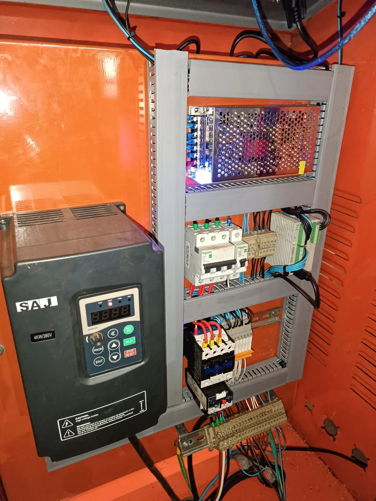
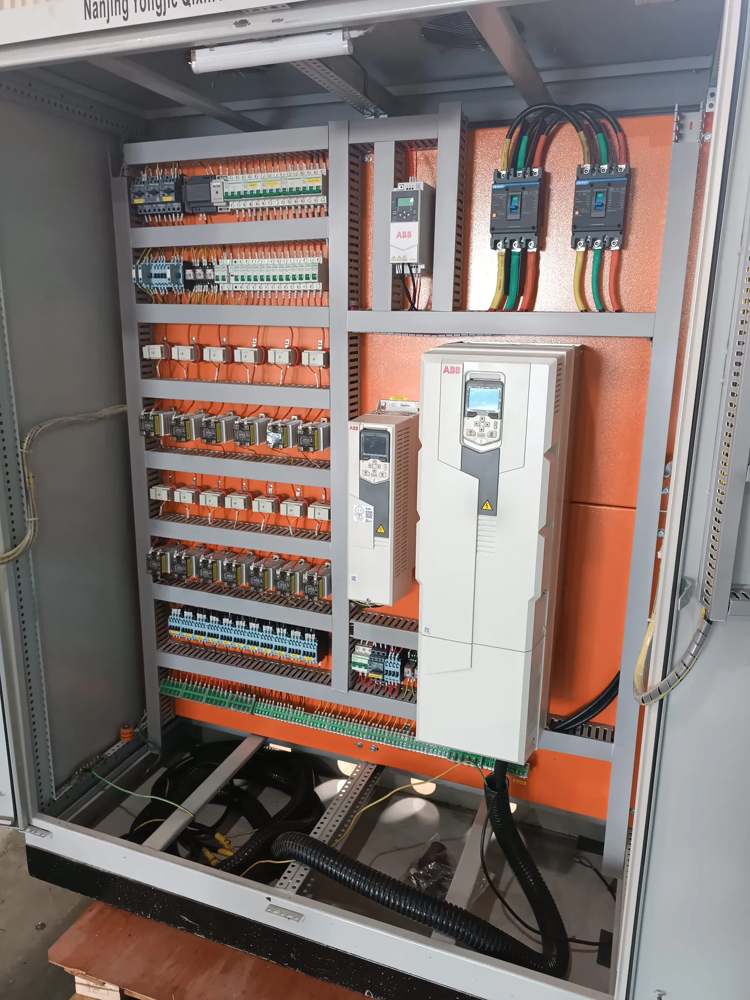
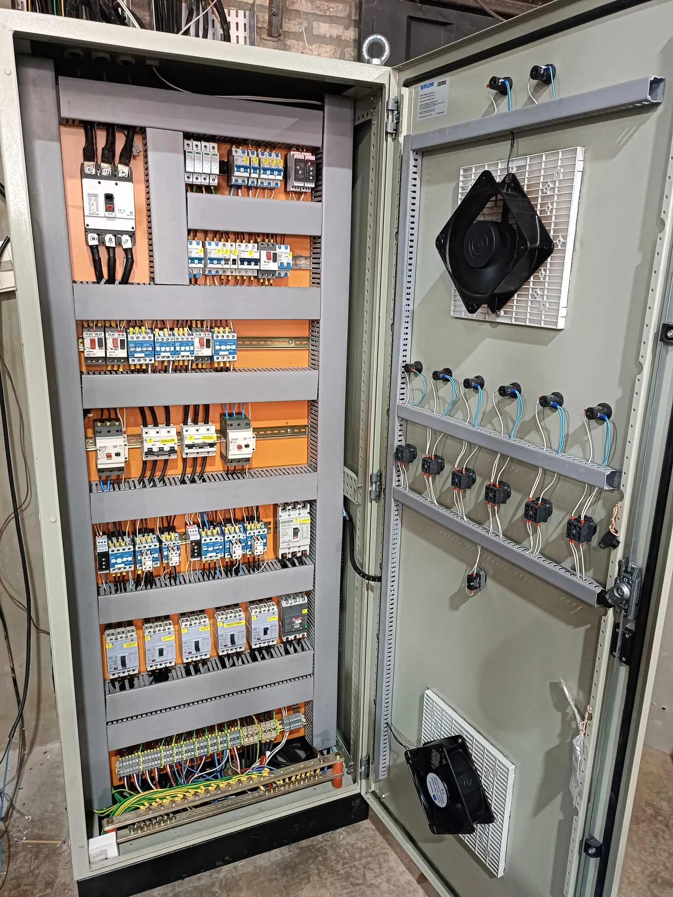

Automatización de línea de yerba mate compuesta
Caso Yerba Mate Pajarito: instalación e integración de PLC, HMI, dosificación y segregación automática mate/tereré.
Leer artículo →Artículos sobre automatización industrial en Paraguay, tableros eléctricos, programación PLC, sistemas SCADA y telemetría. Conocimiento aplicado desde la planta.
Caso Yerba Mate Pajarito: instalación e integración de PLC, HMI, dosificación y segregación automática mate/tereré.
Leer artículo →
Diseño, montaje y puesta en marcha de tableros de potencia, distribución, CCM y control para plantas industriales.
Leer artículo →
Criterios técnicos para seleccionar integradores industriales en Paraguay: experiencia en planta, marcas, soporte y puesta en marcha.
Leer artículo →
Qué aporta un sistema SCADA a la producción, cómo se integra con PLC y por qué las plantas del departamento de Alto Paraná lo están adoptando.
Leer artículo →
Medición remota de energía, alertas automáticas y central de monitoreo para industrias y edificios a nivel nacional.
Leer artículo →